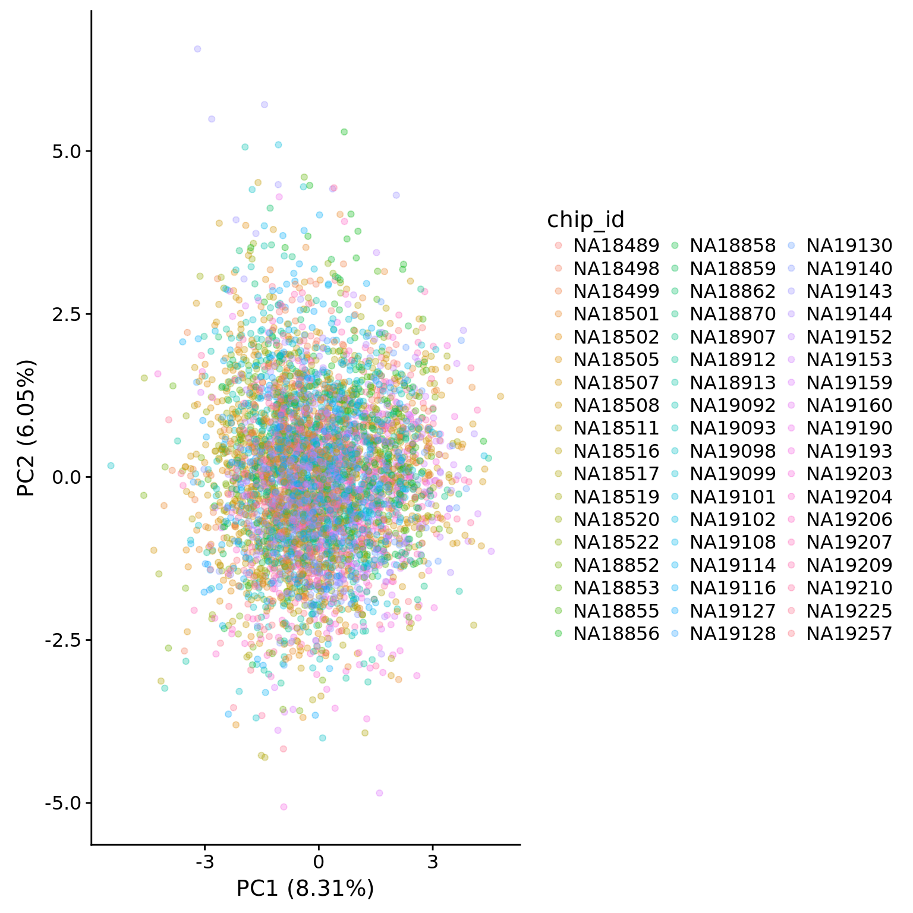
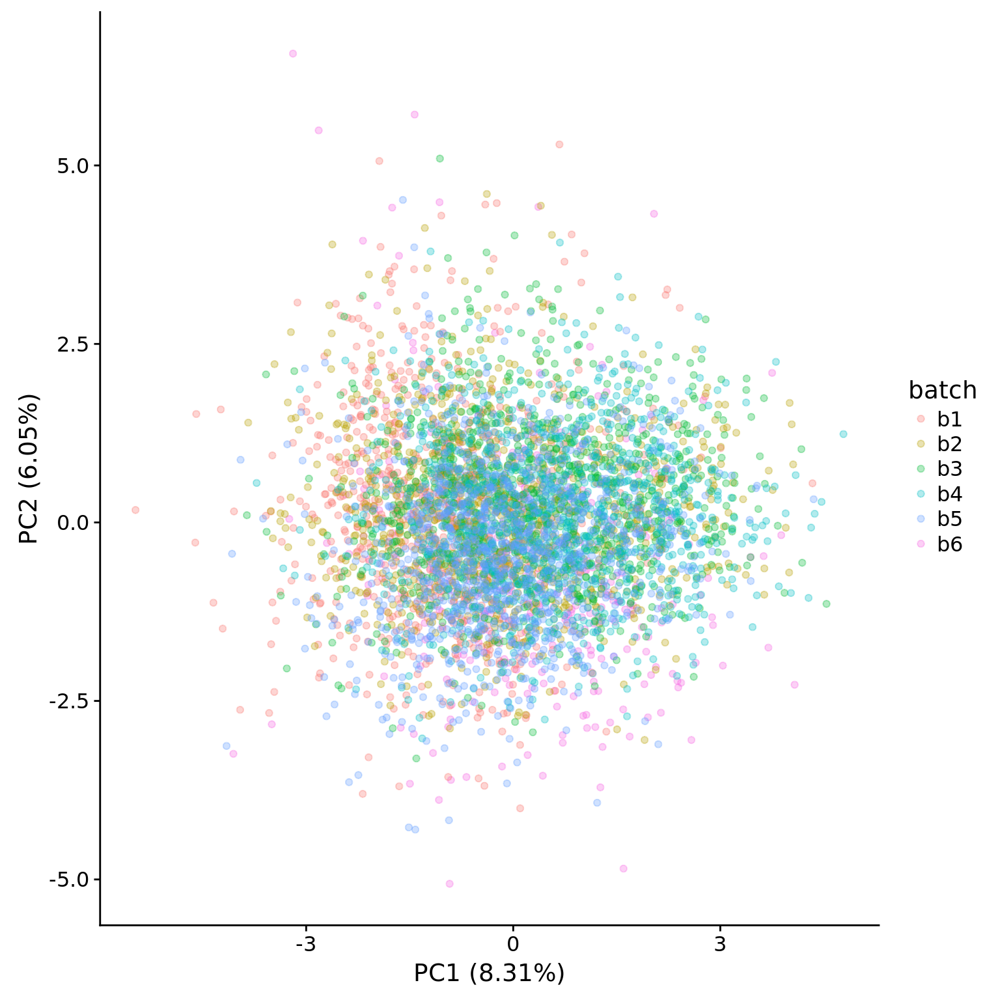
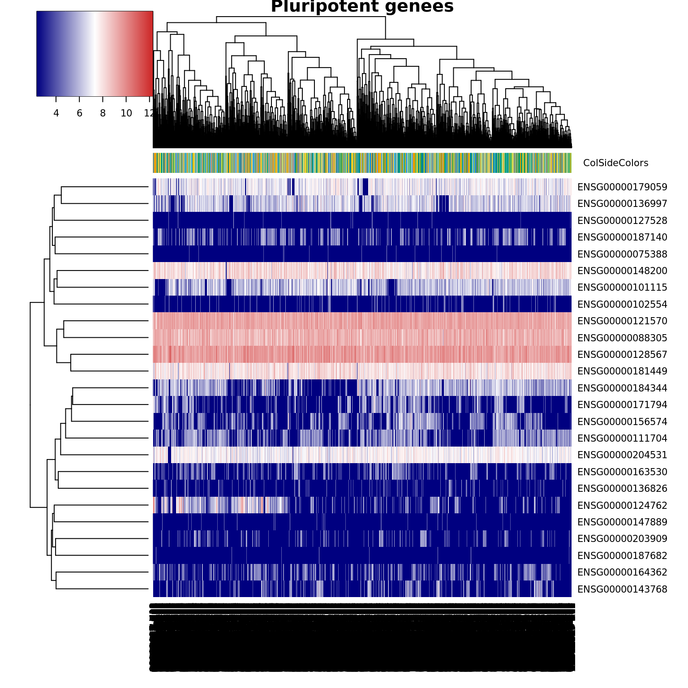

Last updated: 2018-04-11
Code version: 5ebfa1c
This analysis is to see if there is a difference in the pluripotent state across all the individuals.
library("cowplot")
library("dplyr")
library("edgeR")
library("ggplot2")
library("heatmap3")
library("knitr")
theme_set(theme_cowplot())
source("../code/functions.R")
library("Biobase") # has to be loaded last to use `combine`Import data.
eset <- readRDS("../data/eset.rds")
dim(eset)Features Samples
54792 7200 Keep only human
eset <- eset[fData(eset)$source == "H. sapiens", ]
dim(eset) Features Samples
20327 7200 Only keep high-quality single cells.
quality <- read.table("../data/quality-single-cells.txt", stringsAsFactors = FALSE)
colnames(quality) <- c("sample", "quality")
eset <- eset[, quality$quality]
dim(eset)Features Samples
20327 5221 anno <- pData(eset)Convert to log2 counts per million.
log2cpm <- cpm(exprs(eset), log = TRUE)
dim(log2cpm)[1] 20327 5221Looking at the expression of 25 pluripotent genes
## Input pluripotency genes. A list of 27 pluripotency genes used to demonstrate iPSC heterogeneity in [Narshin2011](https://www.jci.org/articles/view/44635)
pluripotency_genes <- read.table("../data/pluripotency-genes.txt", header = TRUE, sep="\t")
log2cpm_pluripotency <- log2cpm[rownames(log2cpm) %in% pluripotency_genes[,2],]
dim(log2cpm_pluripotency)[1] 25 5221PCA to see if there is any outlier.
pca_pluripotency <- run_pca(log2cpm_pluripotency)
plot_pca(pca_pluripotency$PCs, pcx = 1, pcy = 2, explained = pca_pluripotency$explained,
metadata = anno, color = "chip_id", alpha = 0.3)
plot_pca(pca_pluripotency$PCs, pcx = 1, pcy = 2, explained = pca_pluripotency$explained,
metadata = anno, color = "batch", alpha = 0.3)
batch_id <- anno$batch
color <- rep("#999999",length(batch_id))
color[grep("b2", batch_id)] <- "#E69F00"
color[grep("b3", batch_id)] <- "#56B4E9"
color[grep("b4", batch_id)] <- "#009E73"
color[grep("b5", batch_id)] <- "#F0E442"
color[grep("b6", batch_id)] <- "#0072B2"
heatmap3(log2cpm_pluripotency, cexRow=1, cexCol=1, margins=c(8,8), scale = "none", ColSideColors = color, main = "Pluripotent genees")
library("variancePartition")Loading required package: foreachThis R Markdown site was created with workflowr